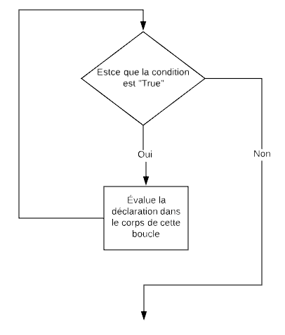
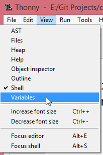

8. La déclaration while¶
Aperçu rapide de la journée
Explorez le fonctionnement de la boucle while en Python. Apprenez à utiliser les fonctions de débogage de Thonny. Continuez à travailler sur le Python actuelle, axée sur les entrées/sorties et la concaténation de chaînes.
- CS20-CP1 Apply various problem-solving strategies to solve programming problems throughout Computer Science 20.
- CS20-FP1 Utilize different data types, including integer, floating point, Boolean and string, to solve programming problems.
- CS20-FP2 Investigate how control structures affect program flow.
Lorsque nous avons programmé avec Reeborg, nous avons utilisé une boucle while chaque fois que nous ne savions pas le nombre d’itérations (le nombre de fois que la boucle se répéterait) avant la fin. Cela a été utile lorsque nous avions besoin de faire des choses comme:
- while front_is_clear():
- move()
Semblable à l’instruction if, une instruction while utilise une expression booléenne pour contrôler le déroulement de l’exécution. Le corps de while sera répété tant que l’expression booléenne de contrôle sera évaluée à True. Dans l’exemple ci-dessus, la fonction front_is_clear() a renvoyé soit True ou False.
La figure suivante montre le flux de contrôle/flow of control.
Un court exemple d’une déclaration while suit.
Note
Pour ces exemples d’introduction, nous connaissons le nombre d’itérations (le nombre de fois que la boucle se répète) avant l’exécution du code. Plus tard, nous pratiquerons des boucles while dans lesquelles nous ne connaîtrons pas le nombre d’itérations à l’avance.
Il peut être utile d’afficher le code ci-dessus à l’aide de codelens:
(while_intro_1_codelens)
Vous pouvez faire quelque chose de similaire à la fonctionnalité de codelens ci-dessus en utilisant Thonny. Tout d’abord, cliquez sur View -> Variables pour voir les valeurs des variables pendant l’exécution de votre code.
Copiez/collez (Ctrl+C/Ctrl+V) le code de la boucle while en haut dans l’éditeur de texte Thonny. Maintenant, appuyez sur le bouton Déboguer le script actuel . Thonny va maintenant mettre en évidence la prochaine ligne à évaluer. Vous pouvez contrôler le débogueur en utilisant les boutons Step over, Step into, et Step out. Pour l’instant, demandez à Thonny de parcourir le code en appuyant sur Pas à pas/Step into (ou en appuyant sur le raccourci clavier F7).

Note
L’utilisation d’un outil de visualisation tel que codelens ou le débogueur de Thonny peut vraiment vous aider à construire un modèle mental du fonctionnement de Python. Chaque fois que vous rencontrez un morceau de code Python que vous ne comprenez pas, votre première réaction devrait être d’exécuter le code dans l’un de ces environnements pour vous aider à comprendre comment cela fonctionne!
Le code suivant est légèrement différent de la version ci-dessus. Pouvez-vous repérer la différence? Avant d’exécuter le code, essayez de comprendre ce qu’il imprimera. Sera-ce la même chose que la première version?
Warning
Bien que while de Python soit très proche du mot anglais “while”, il y a une différence importante: en anglais “while X, fait Y”, on suppose généralement que dès que X devient faux, on arrête avec Y. En Python, il n’ya pas d’arrêt immédiat: après la test initial, les tests suivants ne surviennent qu’après l’exécution de le corps entier, même si la condition devient fausse au milieu du corps de la boucle.
Que fera le code suivant? Note: il vaudrait peut-être mieux utiliser ceci dans Thonny, plutôt qu’ici dans votre navigateur…
8.1. Problèmes de pratique¶
8.1.2. Compte à rebours¶
Ecrivez un programme qui compte à rebours de 20 à 1, puis imprime Blastoff!.
8.1.3. Un Mot de passe—ish¶
Ecrivez un programme qui demande à l’utilisateur d’entrer un mot de passe. Continuez à demander le mot de passe jusqu’à ce qu’ils entrent “sask”. Une fois qu’ils ont tapé “sask” avec succès, imprimez Quel endroit fantastique!.
8.2. Temps de travail¶
Veuillez passer le reste de la classe à continuer à travailler sur votre projet Python actuelle (probablement une affectation d’entrée/sortie de chaîne telle que les Madlibs ou quelque chose de similaire).